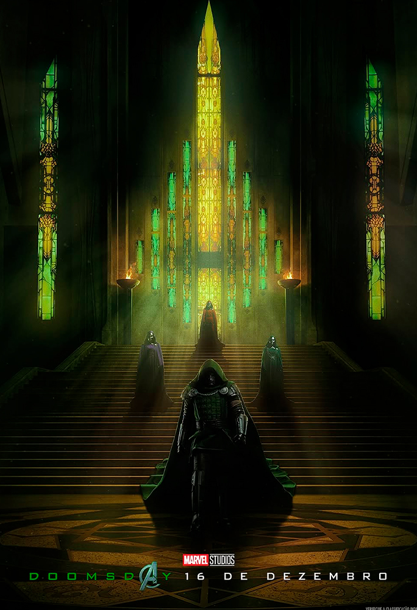
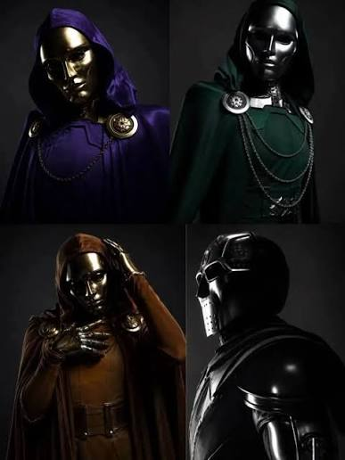
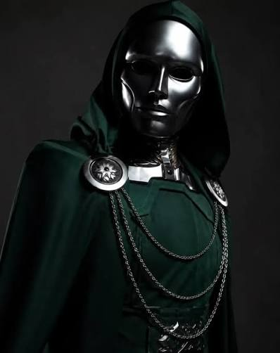
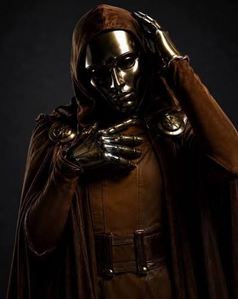
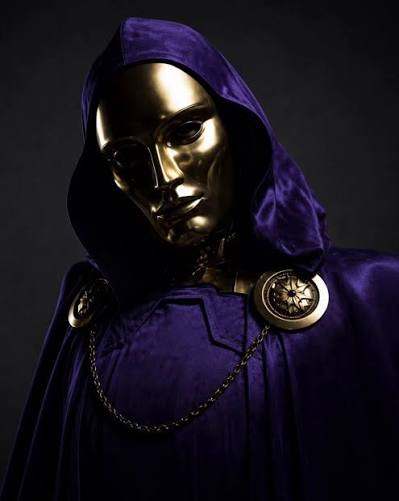
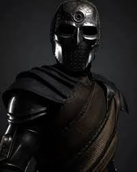

Time do Doutor Destino

Victor von Doom, conhecido como Doutor Destino, é um dos maiores gênios da Marvel, dominando tanto a ciência
quanto a magia. Com sua inteligência e seus poderes, ele lidera sua equipe para enfrentar grandes inimigos e
alcançar seus objetivos.
Frio, estratégico e ambicioso, Destino está sempre vários passos à frente de seus adversários.
Ele não aceita ser derrotado e acredita que nasceu para governar.
Ao lado de sua equipe, ele se torna ainda mais perigoso,
reunindo diferentes habilidades e poderes para superar qualquer desafio.
Sobre a pagina

Magos Latvéria
Conheça os 4 magos que se uniram ao Doutor Destino para enfrentar
os heróis!
Com
poderes mágicos incríveis, esse time promete dar muito trabalho aos seus
adversários.
Mas será que essa equipe está apelona demais?
Venha conhecer cada um desses magos e descubra o poder dessa aliança!
Equipe Doutor Destino




Boris : braço direito Destino
Boris é o braço direito do Doutor Destino, mas será que sua verdadeira
identidade esconde uma grande surpresa?
Existem rumores de que Boris
pode ser ninguém menos que o Doutor Estranho, que teria se aliado
a Destino!
Será que essa teoria faz sentido ou é apenas especulação dos fãs?
Bruxa da Latvéria Capuz Verde
A Feiticeira Verde se aliou ao Doutor Destino em um plano que pode levar
à destruição do multiverso!
Mas existe um detalhe que chama a
atenção: teorias dos fãs apontam que ela pode ser Sylvie,
uma variante feminina de Loki!
Será que essa aliança será fundamental para
os planos de Destino?
E qual seria a verdadeira identidade da Feiticeira Verde?
Bruxa da Latvéria Capuz Laranja
A misteriosa Bruxa da Latvéria, conhecida pelo capuz laranja, já se aliou ao
Doutor Destino em um plano para destruir o multiverso!
Mas o grande mistério
é sua verdadeira identidade! Rumores e teorias dos fãs apontam que ela pode
ser ninguém menos que Wanda Maximoff, a Feiticeira Escarlate!
Será que
Wanda está de volta e agora está do lado de Destino?
O que essa aliança pode significar para os heróis?
Bruxas da Latvéria Capuz Roxo
A misteriosa Bruxa da Latvéria com capuz roxa já se aliou ao Doutor Destino
e promete ajudar em um plano que pode destruir o universo!
Mas o grande
mistério é sua verdadeira identidade! Rumores e teorias dos fãs apontam
que ela pode ser Clea, a personagem que apareceu na cena pós-créditos de
Doutor Estranho no Multiverso da Loucura!
Será que Clea está de volta
e agora faz parte dos planos de Destino?
Ou existe algo ainda mais surpreendente por trás do capuz roxo?